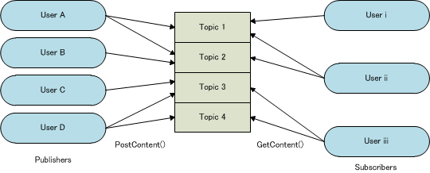

8. Subscriber
8.1. Introduction
Subscriber features are for handling user information on the server. The following two features are available.
- Topics feature
- Deprecated.
- User Status Sharing feature
8.1.1. Topics Feature
The Topics feature performs messaging for purchased and published models. Message senders post messages called content to special channels called topics that include a particular topic of discussion. Message receivers can then retrieve content from any topic of interest. (Figure 8.1)
Content data includes a content ID, an arbitrary string (up to SubscriberConstants::MAX_CONTENT_MESSAGE_LEN characters in length), arbitrary binary data (up to SubscriberConstants::MAX_CONTENT_BINARY_SIZE in size), the principal ID of the user who posted the content, the topics to which the content is posted, and the post date and time. A single piece of content can be posted to multiple topics. Although polling techniques are prohibited in the standard NEX APIs, the use of polling techniques is permitted in APIs for receiving content. For more information, see Getting Content From Topics.

Figure 8.1. Getting Content From Topics
The subscriber feature is intended for use cases such as the following.
- A user posts content such as "All soldiers report! Match conditions will be X and Y!" to a topic when recruiting other players for a match. Other users looking for matches who are following that topic can look through the matches and get involved in one that looks fun.
- A message saying that user-generated map data has been uploaded to the data store is posted to the topic, and that message is added to the new post lists of followers of that topic.
8.1.2. User Status Sharing Feature
The User Status Sharing feature allows friends and their status to be shared by posting user status to the server.
This feature makes an area available for recording the status for each individual user. Data expressing a user’s individual status can be posted to this area at any time. Data expressing posted status is kept by the server until the user logs out, and is returned in response to retrieval requests from other users. Because a posting notification can be sent to friends when a user status is posted, it is also possible to efficiently get the status of other users without polling whenever there is a posting notification.
Additionally, because more than one area is prepared for each user, a user status that is being posted is posted in association with a numeric value that becomes its identification key. By dividing this key by purpose and application, only required statuses can be posted and obtained.
This feature is intended primarily for the following kinds of applications.
- Sharing gathering IDs and user information to bring friends into matchmaking sessions
- Publicly announcing game play status or progress status to friends
This feature has the following kinds of limitations. If these restrictions are not compatible with your application, consider using a different system.
- Data that expresses posted status has a lifetime that lasts until the user logs out, and data is quickly deleted when the user has logged out.
- One area can accommodate only one set of data expressing status, and cannot handle data with multiple types of content, such as topics.
- A user can post data expressing their status only to their own personal area, and cannot post to another user’s area.
- The range of what is shared is in game server units, and other titles and statuses cannot be shared.
- Because data expressing status is managed by a volatile system on the server, you may not be able to recover it entirely if a failure occurs.
8.2. Using the Subscriber Feature
The general workflow for using the subscriber feature is as follows.
8.3. Initializing and Finalizing a Service Client
Use the SubscriberClient service client. Initialization and finalization of the SubscriberClient object works the same as it does for the matchmaking service client. For more information, see 4.3.
8.3.1. Specifying the Cache Feature in the User Status Sharing Feature
When using the User Status Sharing feature, specify the cache feature after the service client is initialized. There is no need to call this when using only the Topics feature.
Typically, enable the cache feature by calling the SubscriberClient::EnableFriendUserStatusesCache() function. If you are not using the cache feature, call the SubscriberClient::DisableFriendUserStatusesCache() function to disable the cache feature. Make sure that you explicitly call one or the other.
For more information about this cache feature, see Cache Feature in the User Status Sharing Feature.
8.4. Operating Topics
8.4.1. Posting Content to Topics
Use the SubscriberClient::PostContent() function to post content to a topic. You can specify to post content to multiple topics. At least one topic must be specified. Each piece of content posted to a topic is assigned a content ID. Content IDs are incremented each time content is posted.
Specify topics as strings formatted as shown below.
"r_<reserved topic number>"
Reserved topic numbers range from 0 to (SubscriberConstants::NUM_RESERVED_TOPICS - 1). In other words, “r_0”, “r_1”, ... , “r_127” are available. Use the SubscriberUtil::ReservedTopicNumToTopicString() function to convert a reserved topic number to a properly formatted topic string. Use the SubscriberUtil::TopicStringToReservedTopicNum() function to convert a topic string to a reserved topic number.
8.4.2. Getting Content From Topics
Use the SubscriberClient::GetContent() function to get the content from the specified topic. Up to SubscriberConstants::MAX_TOPIC_CONTENT_SIZE pieces of content can be stored in a topic at one time.
Content retrieved from a topic is listed in decreasing order by content ID. Content IDs are issued in the order that the content is posted and are strictly increasing. The post date and time included in the content may be off by several seconds, however. Note that these timestamps may not reflect the exact order in which content was posted. Content with a smaller ID than the content with the largest ID that was obtained the last time content was retrieved may be inserted later due to differences in processing time on the server. For example, if, after retrieving the content from a topic, you had two pieces of content with IDs 3 and 1, you could potentially get three pieces of content with IDs 3, 2, and 1 if you retrieve the content from the same topic again later.
In some cases, you may be able to periodically call the SubscriberClient::GetContent() function at a frequency outside of the call frequency range specified in the guidelines. For the limits on call frequency for this function, see the guidelines. When polling, set the SubscriberGetContentParam::SetMinimumContentId() function so that you do not get the same content that was retrieved before, and get no more than 20 posts from any one topic at a time. You can also poll using an overload of the function that gets content from multiple topics at the same time. When the application transitions to a scene where the obtained information is not used, stop polling and avoid unnecessary access as much as possible.
8.4.3. Deleting Posted Content
Use the SubscriberClient::DeleteContent() function to delete content that the local user posted previously. To delete content, you must specify the content ID and the topics it was posted to. If a user specified three topics when the content was posted, for example, all three topics would need to be specified when deleting the content for it to be deleted from all of them. Specify a single topic if you want to delete the piece of content from that topic only. In this case, the piece of content would remain untouched in the other two topics. Users cannot delete content posted by other users.
8.5. Operating User Status
8.5.1. Getting the Status of Friends From the Server
Use the SubscriberClient::GetFriendUserStatuses() function to get the status of friends from the server.
All of the user data from all of the users who are your friends who have posted their status is retrieved collectively as UserStatusInfo. If you only want to get specific statuses, you can specify a numeric value as a key to focus the retrieval targets. However, if a user has restricted publication of their presence, you cannot get their status even if they are a friend.
Use this method to collectively get the status of friends when you start, and then only get the differences as needed later.
8.5.2. Registering User Status to the Server
Use the SubscriberClient::UpdateUserStatus() function to add your own status to the server.
Specify binary data that expresses the status, and set numeric values as keys that specify statuses that indicate the purpose and application, in UserStatusParam. The maximum buffer length of binary data that can be set is SubscriberConstants::MAX_STATUS_BINARY_SIZE. Also, the number of numeric values that can be set as keys specifying the statuses that can be set is SubscriberConstants::STATUS_KEY_SIZE. Specify a value in the range from 0 to less than SubscriberConstants::STATUS_KEY_SIZE.
The number of statuses that can be registered at one time is SubscriberConstants::STATUS_KEY_SIZE. You can not register more than this number of statuses. Also, you must not duplicate numeric values used as keys specifying the status in UserStatusParam that are specified at the same time.
When a status is registered, a notification can be set to users who are friends. The notification does not contain data about the status, but it is possible to get the status when the notification has been received. Set the isNotify parameter to true to receive notifications. If false is specified for this argument, or if it is omitted, no notification is sent. Specify not to send notification if there is no need for a registered status to have immediate effect, or no processing is to be performed even if notification is received.
8.5.3. Receiving Notifications of User Status Registrations From the Server
You can receive notifications sent when another user registers their status. The way notifications are received is the same as the handling of notification events in matchmaking (4.18.).
Notifications can be sent (obtainable with the NotificationEvent::GetType() function) for the following event types.
- NotificationEvents::StatusUpdatedEvent: Notification when a user status has been registered. Notification is only of users that are friends. There will be no notification for users who are not friends. The principal ID obtained with the
NotificationEvent::GetSource()function is that of a user that has made the registration. The notification is only that a registration has been made, and values obtained with the sub-typesNotificationEvent::GetParam1(),NotificationEvent::GetParam2(), andNotificationEvent::GetStringParam()are meaningless.
8.5.4. Getting the Status of Users From the Server
Use the GetUserStatuses() function to get the status when there is a posting notification.
You can specify the user to get. The number of users for which status can be obtained at one time is SubscriberConstants::MAX_GET_STATUS_USER_SIZE. If you get the status each time there is a notification, there is a risk of exceeding the guideline. For this reason, select the option to collectively get status for users with this range.
8.6. Cache Feature in the User Status Sharing Feature
The User Status Sharing feature has a caching feature. When caching is enabled with the SubscriberClient::EnableFriendUserStatusesCache() function, the library runs the following functions.
- Batch retrieve the status of friends and cache them in memory.
- Stand by for posting notifications of friends.
- Get the status of friends for whom notifications were received, and update the cache in memory.
- Resume standing by for the posting notifications of friends.
If caching is enabled, use the SubscriberClient::GetFriendUserStatuses() function to get status. There is no need to pass ProtocolCallContext. Because the statuses of friends are cached on the client, a value is returned immediately without establishing communication, at the time of retrieval from the application.
Communication for updating the cache is performed at a set interval to keep it within the scope specified in the guidelines. Basically, a status is retrieved at the time of a notification, but if a notification is received immediately after updating the cache, the cache is updated after several seconds. Even in this case, all notifications received while no communication is underway are held, and all retrievals are performed in a batch at the next opportunity.
To specify the cache feature, explicitly call SubscriberClient::EnableFriendUserStatusesCache() or SubscriberClient::DisableFriendUserStatusesCache() immediately after the service client has been initialized. You can also call these functions to enable or disable the cache feature if you want to change the cache feature specification while the application is running.
8.7. Error Handling
Error handling is the same as for matchmaking. For more information, see 4.24. Table 8.1 lists the errors that can occur when using the subscriber feature. The functions that return these errors are listed in the individual API Reference. This table excludes shared errors that occur during NEX communication, and so on.
| ReturnCode Value | Description |
|---|---|
| QERROR(Subscriber, Unknown) | Unknown error. This error could be caused by an unexpected server error. |
| QERROR(Subscriber, InvalidArgument) | Invalid argument. This error is caused by an implementation error. |
| QERROR(Subscriber, OverLimit) | This error is caused by an implementation error. Consider the following example. The message or binary data included in posted content is too large. Too many topics are retrieved at the same time. As an exception, this error can also occur when statuses are updated simultaneously (over a period of about one minute) for 100 or more users of those targeted for status retrieval. |
| QERROR(Subscriber, PermissionDenied) | Attempted to delete content that was posted by another user. This error is caused by an implementation error. |
| QERROR(RendezVous, DatabaseTemporarilyUnavailable) | This error can occur when the database is temporarily inaccessible. |